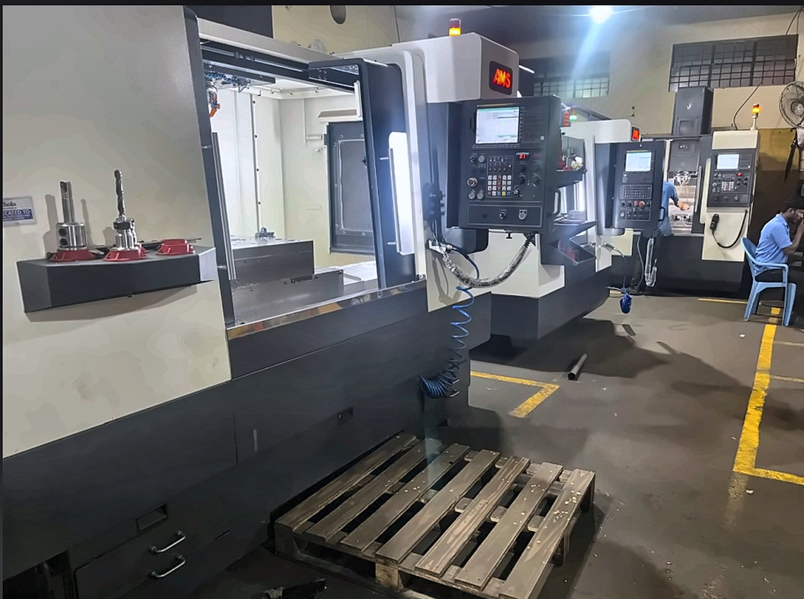
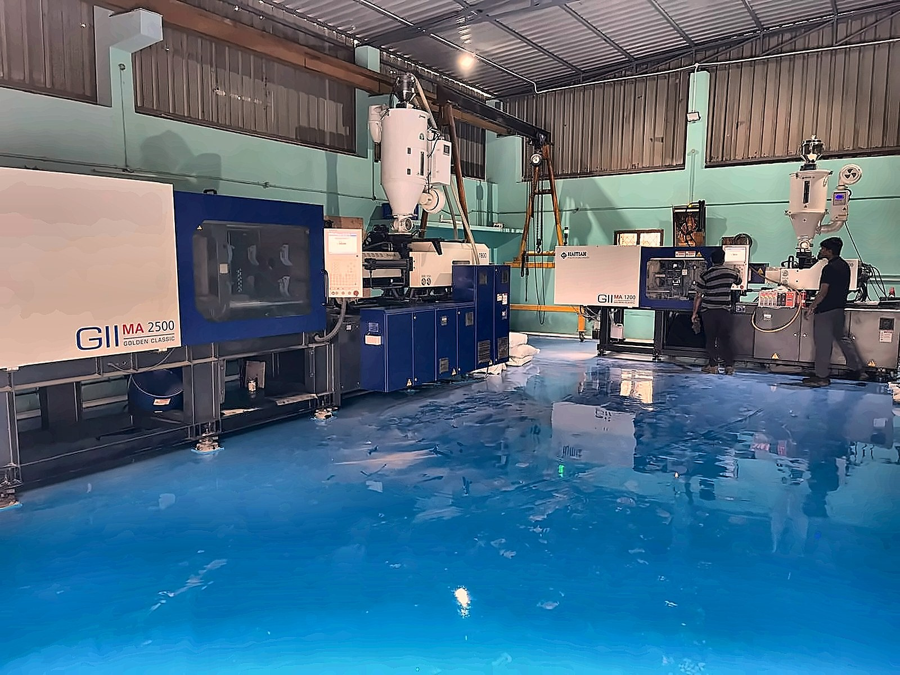

SS
S.G. Sundar Suresh
Managing Partner
More than 23 years in mould making, with deep knowledge of plastic injection mould design, product design and tooling operations, and of working with customers to meet their requirements.
Our vision, mission and the people behind every mould.
Sri Kamatchi Toolings is a plastic injection mould maker in SIDCO Industrial Estate, Thirumudivakkam, Chennai. We make interior and exterior parts tooling for automobiles and home appliances, with compact mould design, moulds planned for robotic handling, and continual improvement in the skill of moulds.
Our agenda is simple: make moulds right the first time, deliver on time, and keep the customer delighted.


Design and business on one side, manufacturing and operations on the other, with quality owned by a third partner.
More than 23 years in mould making, with deep knowledge of plastic injection mould design, product design and tooling operations, and of working with customers to meet their requirements.
An experienced tool maker with 13 years at KMD (2008 to 2021), after conventional milling and grinding work from 2003 to 2008. Strong in automobile aesthetic parts, engine parts and lighting parts.
Passed out of Government Industrial Training Institute, Guindy as a Tool & Die Fitter in 1999 and worked in a forging company until 2002.
Joined a reputed mould company as a tool maker and gained hands-on tool-room experience until 2007.
Learned CAD/CAM design at CIPET, then worked as a mould designer from 2008 to 2012.
Promoted to manager and plant head for design and manufacturing.
Started Sri Kamatchi Toolings in Thirumudivakkam, Chennai. The first VMC was installed on 9 July 2021.
A 250 T injection press joined the floor in March 2025, with a second press following in June 2026.
Accounts, billing and day-to-day administration.
Mould and part design in CAD/CAM.
Steel, standard parts and partner services.
Plans the floor and keeps jobs on schedule.
Fitting, assembly and finishing by skilled tool makers.
Operators and a programmer on three VMCs.
Dedicated operators on the ZNC EDM machines.
A partner-level owner for inspection and approval.
Sri Kamatchi Toolings is ISO 9001:2015 certified, and customers have recognised the work.


Share your part drawing or sample. We will study it and come back with a compact, robot-ready mould plan.